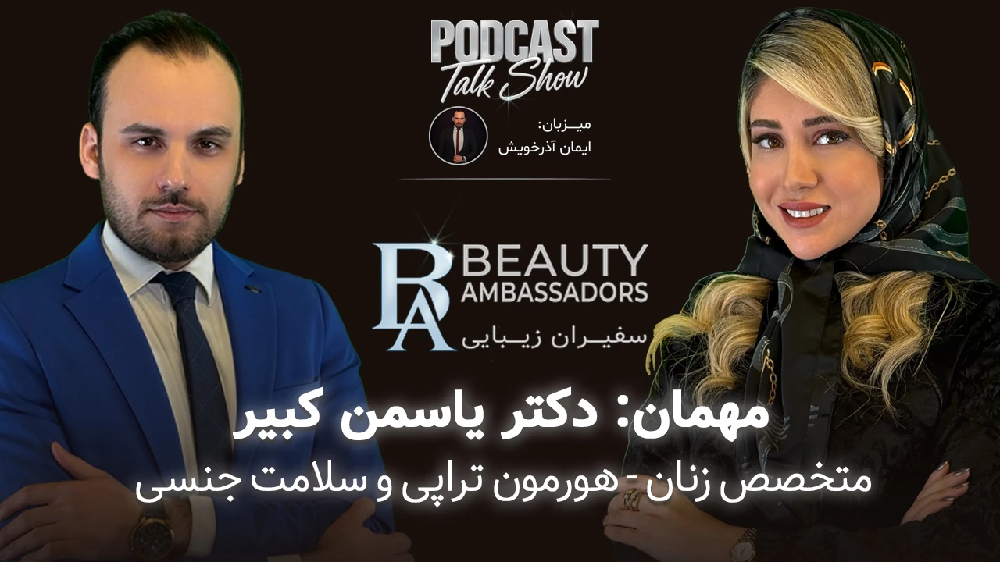
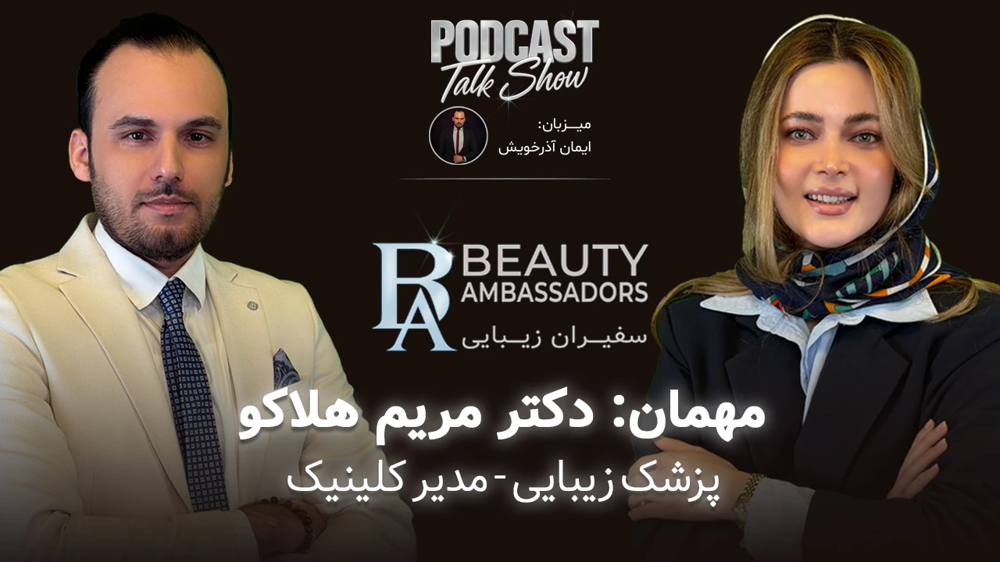
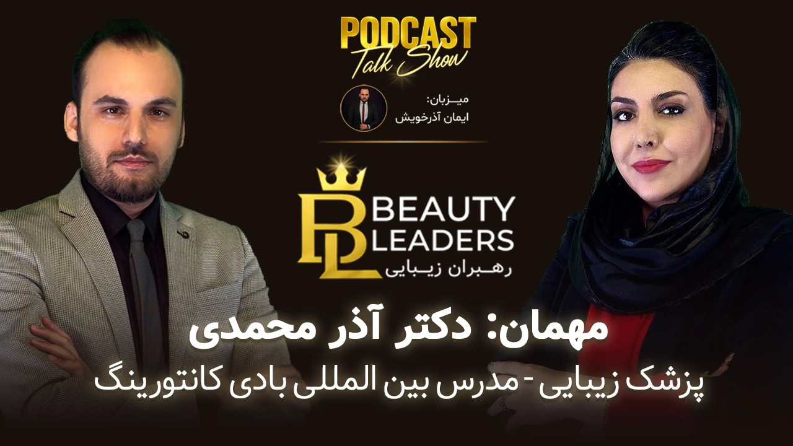

Beauty Leaders ·
Where patient expectations meet surgical judgment
ENT specialist and member of the American Academy of Facial Plastic and Reconstructive Surgery
THE CONVERSATION ARCHIVE
29 published conversations featuring physicians and specialists across Beauty Leaders and Beauty Ambassadors. Each introduction presents the guest and the editorial significance of the episode, with full videos on YouTube.
Beauty Leaders ·
ENT specialist and member of the American Academy of Facial Plastic and Reconstructive Surgery

Beauty Leaders ·
Aesthetic physician and medical technology educator

Beauty Leaders ·
Plastic and reconstructive surgeon; Tehran University of Medical Sciences faculty and Razi Hospital department head

Beauty Ambassadors ·
Obstetrician-gynaecologist with a focus on women’s health and hormone therapy

Beauty Ambassadors ·
Aesthetic physician and founder of wellness and beauty centres


Beauty Leaders ·
Aesthetic physician and international body-contouring educator

Beauty Leaders ·
ENT specialist and facial aesthetic surgeon; ENT department head at Bank Melli Hospital

Beauty Leaders ·
Aesthetic physician and clinic director
No conversations found.
This archive draws on 29 public entries in the channel owner’s official video export. Cover artworks are provisional and may be updated independently for Persian and English. Professional descriptions are based on the published programme introductions; independently corroborated sources are linked only where specifically available.